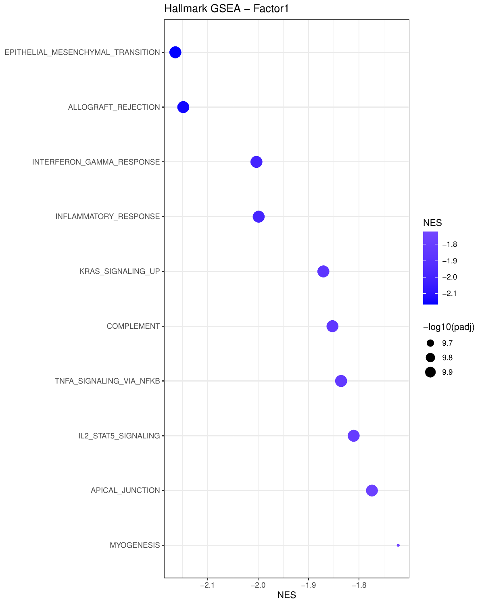
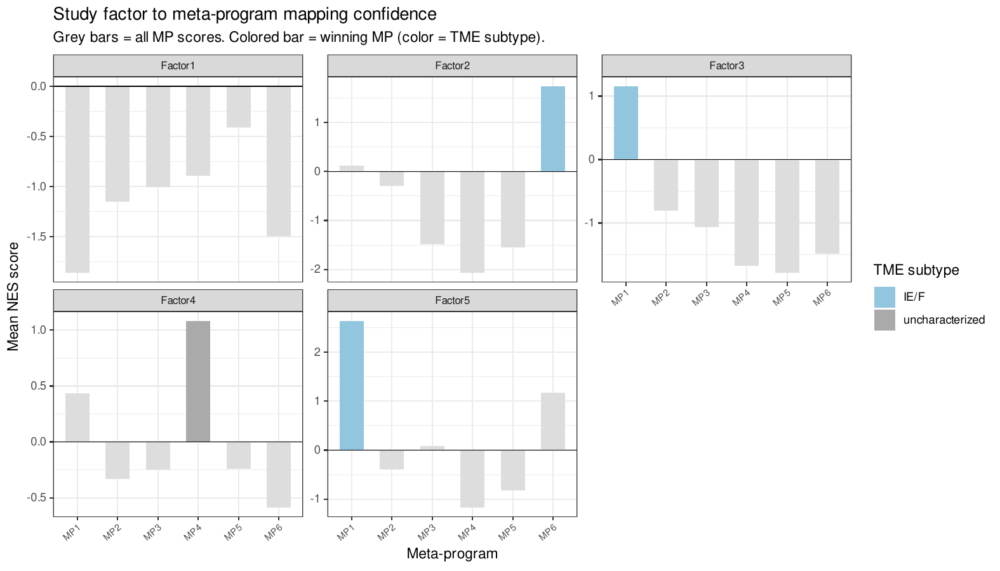

TME State Characterisation
03-tme-states.Rmd
library(CellTFusion)
#>
#> Once latent factors have been extracted (see Cell Group Construction), each factor can be functionally annotated by linking it to known biological programs. This article covers:
- Hallmark GSEA — associate each latent factor with MSigDB Hallmark gene sets
- Meta-program mapping — compare factors to cancer-type-specific reference programs derived from TCGA
- TME subtype annotation — annotate factors with established TME immune subtypes
These steps require:
-
counts.norm— log-normalized expression matrix (genes × samples) -
latent_spaces— output ofcompute.latent_factors(); the$Zelement is the samples × factors matrix
Hallmark GSEA per latent factor
compute_factor_gsea() fits a multivariate
limma model using the latent factor scores as covariates,
ranks genes by moderated t-statistic per factor, and runs a pre-ranked
Hallmark gene set enrichment analysis via fgsea (Korotkevich et al.
2021) against the MSigDB Hallmark collection (Liberzon et al.
2015). The Hallmark collection summarizes ~50 curated gene
sets representing well-defined, non-redundant biological processes
(e.g. EMT, interferon response, hypoxia, inflammatory response), making
it a natural, interpretable reference to functionally annotate a
data-driven latent factor. A dot plot of the top enriched pathways is
saved per factor.
gsea_results <- compute_factor_gsea(
RNA.tpm = counts.norm, # genes × samples expression matrix
features_df = latent_spaces$Z, # samples × factors (from compute.latent_factors)
plot_dot = TRUE,
top_n = 10,
file_name = "Tutorial",
width = 8,
height = 10
)The result is a list with two elements:
| Element | Description |
|---|---|
$DE_results |
Named list of limma DEG tables, one per factor |
$GSEA_results |
Named list of fgsea result data frames, one per factor |
When plot_dot = TRUE, one dot plot per factor is saved
to Results/, showing its top enriched/depleted Hallmark
gene sets (dot size = significance, color = normalized enrichment
score):

Map factors to cancer-type meta-programs
Background: what are meta-programs?
A meta-program (MP) is a recurrent module of co-expressed genes reflecting a specific transcriptional cell state (e.g. cell cycle, hypoxia, epithelial-mesenchymal transition, interferon response, stress) that recurs across tumors, patients, and even cancer types, rather than being specific to one dataset. This concept was systematically characterized by Gavish et al. (Gavish et al. 2023) (“Hallmarks of transcriptional intratumour heterogeneity across a thousand tumours”, Nature, 2023), who derived a curated, pan-cancer set of intratumour heterogeneity meta-programs from single-cell RNA-seq data spanning many cancer types. CellTFusion builds cancer-type-specific reference meta-programs from bulk TCGA RNA-seq data using the same underlying logic — recurrent, biologically interpretable transcriptional programs — so that latent factors identified in an independent study can be related back to a well-established vocabulary of TME states instead of being described only in dataset-specific terms.
How map_factors_to_metaprograms() works
-
Reference construction (offline, per cancer type):
for a given TCGA cohort (e.g.
"skcm"for melanoma,"blca"for bladder cancer), a Hallmark GSEA is run per meta-program to build a reference Hallmarks x meta-programs normalized enrichment score (NES) matrix. This reference is shipped with the package as pre-built.RDataobjects, one per supported cancer type. -
Study-side profile: the Hallmark NES profile of
each study latent factor, computed in the previous step by
compute_factor_gsea(), is assembled into a Hallmarks x factors matrix (build_nes_matrix()). -
Matching: for each study factor, the function
computes, for every reference meta-program, the mean NES of the Hallmark
gene sets that define that meta-program. The meta-program with the
highest mean NES (and NES > 0) is assigned as the factor’s
best_MP.
This effectively asks: “among all known recurrent TME/tumour transcriptional programs for this cancer type, which one does this latent factor’s Hallmark signature resemble most?” — turning an abstract NMF factor into a biologically named TME state (e.g. “hypoxia”, “interferon response”, “stromal/CAF-like”).
Supported cancer_type values (bundled TCGA reference):
"skcm" (melanoma), "blca" (bladder cancer),
"luad" (lung adenocarcinoma).
mp_mapping <- map_factors_to_metaprograms(
gsea_study = gsea_results,
cancer_type = "skcm", # match to your cancer type
plot = TRUE,
file_name = "Tutorial"
)The result contains:
| Element | Description |
|---|---|
$factor_mapping |
Data frame with, per study factor: factor,
best_MP (closest reference meta-program),
best_score (its mean NES), all_scores (mean
NES against every reference meta-program) |
$reference |
The reference Hallmarks x meta-programs NES matrix used for comparison |
A plot of factor-to-meta-program mapping confidence is saved to
Results/ when plot = TRUE: each panel is a
study factor, grey bars show the mean NES against every reference
meta-program, and the winning meta-program is highlighted and colored by
its associated TME subtype (see below):

Annotate factors with TME immune subtypes
map_factors_to_TME() uses TCGA sample-level annotations
from Bagaev et al. (Bagaev et al. 2021), who defined four
conserved, pan-cancer Molecular Functional Portrait
(MFP) subtypes of the tumor microenvironment from bulk
transcriptomes:
- IE (Immune Enriched, non-fibrotic) — high immune infiltration, low stromal/fibrotic signal.
- IE/F (Immune Enriched, Fibrotic) — high immune infiltration co-occurring with a fibrotic/stromal signature.
- F (Fibrotic) — stroma/fibrosis-dominated, low immune infiltration.
- D (Depleted) — low immune infiltration and low fibrosis (“cold” tumors).
These subtypes were shown to be associated with differential response
to immune checkpoint blockade, making them a clinically relevant
vocabulary to annotate CellTFusion latent factors against. For each
cancer type, map_factors_to_TME() matches TCGA patients to
their MFP subtype, then computes, per latent factor, the Spearman
correlation between factor scores and each subtype (cor_IE,
cor_IEF, cor_F, cor_D); the
subtype with the strongest positive correlation is assigned as the
factor’s best_MFP.
tme_annotation <- map_factors_to_TME(
cancer_name = "skcm",
Z = latent_spaces$Z,
plot = TRUE,
file_name = "Tutorial"
)Derive meta-programs from GSEA (unsupervised)
If you have run CellTFusion across multiple cohorts and want to
derive consensus meta-programs from scratch rather than mapping to TCGA
references, use derive_meta_programs(). This clusters
factors by their Hallmark NES profiles to identify recurring biological
programs.
meta_programs <- derive_meta_programs(
gsea_results = gsea_results,
k = NULL, # number of clusters; NULL for automatic selection
file_name = "Tutorial",
plot = TRUE
)Putting it all together
In practice, this full annotation sequence is run automatically when
using the CellTFusion() wrapper. The outputs are accessible
directly from the result object:
res <- CellTFusion(raw.counts = raw.counts, cancer_type = "skcm", ...)
# Access GSEA + meta-program mapping results
res$TME_states # factor-to-meta-program mapping table
res$Metaprograms_reference # reference NES matrix
# Access latent factors used as input to GSEA
head(res$Latent_spaces$Z)